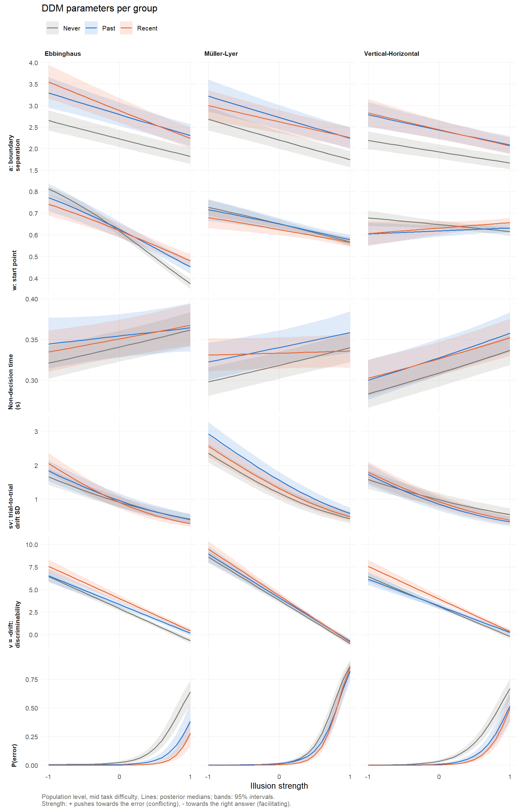
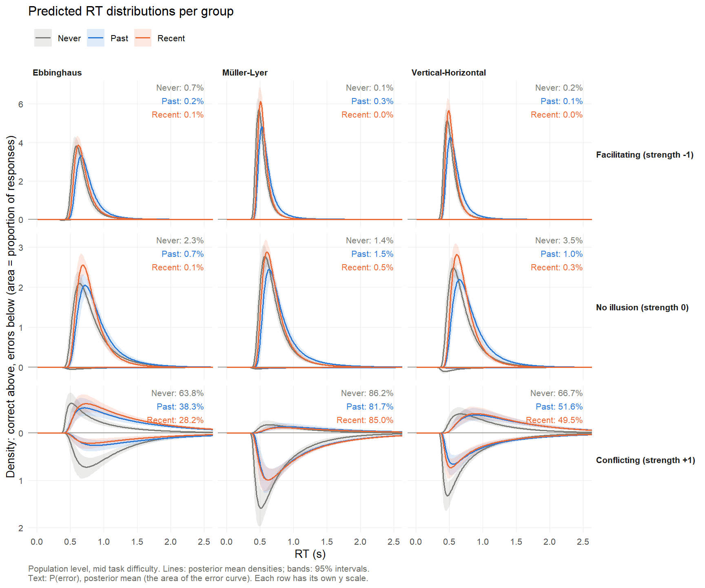
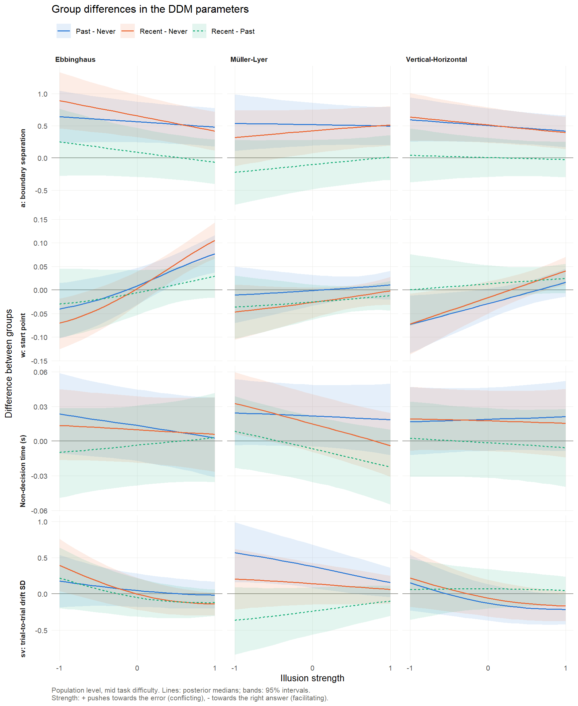
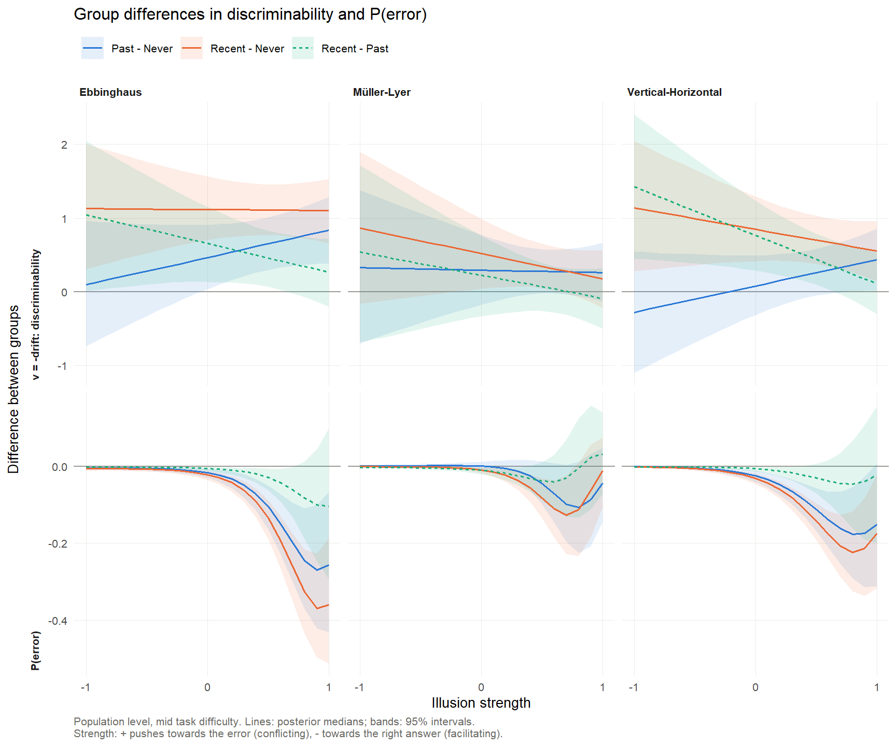

IllusionGameSelfAssociation - DDM: group differences
The merged fit of the drift diffusion model (analysis/models/ddm5.rds, from ./hpc pull; ddm5 in analysis/server/models.R) at the population level: how the groups differ on every parameter and derived quantity, for each illusion, across illusion strength, and what that predicts for the RT distributions; then the group differences averaged over the whole design, the marginal slopes of strength and difficulty, and the illusion magnitude index. The participant level, and what age and the questionnaires account for, is in 4_ddm_correlates.qmd. Render from the repo root (about 10 min; it needs cogmod ≥ 0.3.6):
quarto render analysis/3_ddm_groups.qmd
The model (cogmod_ddm) has five parameters: the drift rate, the boundary separation, the start point (bias), the non-decision time and the trial-to-trial drift SD (sigmadrift); the start point’s and the non-decision time’s trial-to-trial ranges are fixed at 0. dec(Error) puts the error on the upper boundary, so the drift is negative when the correct response is favoured, and the start point is a share of the boundary from the correct one (above 0.5: closer to the error). Discriminability (delta) is the drift towards the correct response, −drift.
Unless said otherwise, everything is at Task_Difficulty = 0 (mid difficulty). poutlier has no Group term, so it is the same in every group and left out of the comparisons. The quantities, their scales and the contrasts come from analysis/server/marginals.R; see there. The numbers behind the figures are written to analysis/results/ddm_groups_*.csv and ddm_ppc_*.csv.
Loading
Code
library(brms)library(modelbased)library(ggplot2)# Runs from analysis/ (quarto) or from the repo root (interactively).root <-if (dir.exists("server")) "."else"analysis"source(file.path(root, "server/models.R"))source(file.path(root, "server/marginals.R"))stopifnot(utils::packageVersion("cogmod") >="0.3.6")fit_file <-Sys.getenv("IGSA_FIT", unset =file.path(root, "models/ddm5.rds"))out_dir <-file.path(root, "results")dir.create(out_dir, showWarnings =FALSE, recursive =TRUE)m <-readRDS(fit_file)
Code
# Population-level convergence, the part the marginals below rest on.b <- posterior::summarise_draws(as_draws_array(m, variable ="^b_", regex =TRUE),"rhat", "ess_bulk", "ess_tail")np <-nuts_params(m)divergent <-sum(np$Value[np$Parameter =="divergent__"])
Fit: ddm5.rds, 8 chains, 8000 draws, 0 divergent transitions. Population-level coefficients (181): max Rhat 1.022 (4 above 1.01), min bulk ESS 494, min tail ESS 919.
Draws
Code
grid <-igsa_grid(m, strength =round(seq(-1, 1, by =0.1), 2), difficulty =0)d <-igsa_draws(m, grid)poutlier <- d$poutlierd$poutlier <-NULLmeans <-igsa_summary(d, grid)write.csv(means, file.path(out_dir, "ddm_groups_means.csv"), row.names =FALSE)contrasts <-igsa_summary(igsa_contrasts(d, grid))# The two numbers per contrast that the curves come down to: the difference# with no illusion, and the difference in the effect of the illusion.at0 <- grid$Illusion_Strength ==0base <-igsa_summary(igsa_contrasts(lapply(d, function(x) x[, at0, drop =FALSE]), grid[at0, ]))base$Measure <-"No illusion (strength 0)"slope <-igsa_summary(igsa_contrasts(igsa_slopes(d, grid, from =0, to =1)))slope$Measure <-"Effect of the illusion (strength 0 to 1)"cols <-c("Contrast", "Illusion_Type", "Quantity", "Measure", "Median", "CI_low", "CI_high", "pd")summary_tab <-rbind(base[cols], slope[cols])write.csv(summary_tab, file.path(out_dir, "ddm_groups_contrasts.csv"), row.names =FALSE)
Code
# Labels and coloursquantities <-c(mu ="drift (towards the error)",boundary ="a: boundary separation",bias ="w: start point",ndt ="Non-decision time (s)",sigmadrift ="sv: trial-to-trial drift SD",delta ="v = -drift: discriminability",perror ="P(error)")parameters <-c("mu", "boundary", "bias", "ndt", "sigmadrift")derived <-c("delta", "perror")illusions <-c(Ebbinghaus ="Ebbinghaus", MullerLyer ="Müller-Lyer",VerticalHorizontal ="Vertical-Horizontal")# Never is the reference, in neutral grey; each contrast against it takes the# other group's hue, and Recent - Past the next categorical slot.group_col <-c(Never ="#7a7a75", Past ="#2a78d6", Recent ="#eb6834")contrast_col <-c("Past - Never"="#2a78d6", "Recent - Never"="#eb6834","Recent - Past"="#1baf7a")contrast_lty <-c("Past - Never"="solid", "Recent - Never"="solid","Recent - Past"="22")tidy <-function(x) { x$Quantity <-factor(quantities[x$Quantity], levels = quantities) x$Illusion_Type <-factor(illusions[as.character(x$Illusion_Type)], levels = illusions)if (!is.null(x$Contrast)) x$Contrast <-factor(x$Contrast, levels =names(contrast_col)) x}means <-tidy(means)contrasts <-tidy(contrasts)summary_tab <-tidy(summary_tab)theme_igsa <-theme_minimal(base_size =10) +theme(panel.grid.minor =element_blank(),panel.grid.major =element_line(colour ="#ebebe8", linewidth =0.3),strip.text =element_text(face ="bold", hjust =0),strip.text.y =element_text(angle =0),legend.position ="top",legend.justification ="left",plot.background =element_rect(fill ="white", colour =NA),plot.caption =element_text(colour ="#6b6b66", hjust =0) )caption <-paste0("Population level, mid task difficulty. Lines: posterior medians; bands: 95% intervals.\n","Strength: + pushes towards the error (conflicting), - towards the right answer (facilitating).")
Each group’s surface
Code
# The drift itself is the discriminability with its sign flipped: it is shown# as discriminability only.ggplot(means[means$Quantity != quantities[["mu"]], ], aes(Illusion_Strength, Median)) +geom_ribbon(aes(ymin = CI_low, ymax = CI_high, fill = Group), alpha =0.15) +geom_line(aes(colour = Group), linewidth =0.7) +facet_grid(Quantity ~ Illusion_Type, scales ="free_y", switch ="y",labeller =labeller(Quantity =label_wrap_gen(20))) +scale_colour_manual(values = group_col) +scale_fill_manual(values = group_col) +scale_x_continuous(breaks =c(-1, 0, 1)) +labs(x ="Illusion strength", y =NULL, colour =NULL, fill =NULL,title ="DDM parameters per group", caption = caption) + theme_igsa +theme(strip.placement ="outside")

Predicted RT distributions
What the population-level parameters imply for the responses themselves: the density of correct responses above the axis and of errors below it (as negative heights). Each is the diffusion’s defective density (the first passage at that boundary), so the area under a curve is the proportion of responses of that kind, and the error curve’s area is the P(error) above. The lines are posterior means of the density, the bands 95% intervals, from 500 evenly spaced draws. Each row has its own y scale, so compare heights within a row, not between rows. The outlier component is left out: at the population level it is 0.06% of responses, the same in every group.
Code
# Defective first-passage densities, from cogmod, for draws x time points.ddm_density <-function(t, p, response) { n <-length(p$mu)matrix(cogmod::dcogmod_ddm(rep(t, each = n), drift = p$mu, boundary = p$boundary, bias = p$bias,ndt = p$ndt, response = response, sigmadrift = p$sigmadrift),nrow = n)}strength_lab <-c("-1"="Facilitating (strength -1)", "0"="No illusion (strength 0)","1"="Conflicting (strength +1)")rt <-seq(0.01, 3, by =0.01)draw_ids <-round(seq(1, ndraws(m), length.out =500))cells <-which(grid$Illusion_Strength %in%c(-1, 0, 1))dens <-do.call(rbind, lapply(cells, function(j) { p <-lapply(d, function(x) x[draw_ids, j]) f <-list(Correct =ddm_density(rt, p, 0),Error =ddm_density(rt, p, 1) )do.call(rbind, lapply(names(f), function(r) {# Errors hang below the axis. s <-if (r =="Error") -1else1 q <- s *apply(f[[r]], 2, stats::quantile, probs =c(0.025, 0.975))data.frame(grid[j, c("Group", "Illusion_Type", "Illusion_Strength")], Response = r,RT = rt, Density = s *colMeans(f[[r]]),CI_low =pmin(q[1, ], q[2, ]), CI_high =pmax(q[1, ], q[2, ]),row.names =NULL) }))}))dens$Illusion_Type <-factor(illusions[as.character(dens$Illusion_Type)], levels = illusions)dens$Strength <-factor(strength_lab[as.character(dens$Illusion_Strength)], levels = strength_lab)# P(error) per group, printed in the empty top right, as the error curve is# often too flat to see. The posterior mean, which is the area of the mean# density.perr <-data.frame(grid[cells, c("Group", "Illusion_Type", "Illusion_Strength")],PError =colMeans(d$perror[, cells]), row.names =NULL)perr$Illusion_Type <-factor(illusions[as.character(perr$Illusion_Type)], levels = illusions)perr$Strength <-factor(strength_lab[as.character(perr$Illusion_Strength)], levels = strength_lab)perr$Label <-sprintf("%s: %.1f%%", perr$Group, 100* perr$PError)shown <- dens$RT <=2.5top <-tapply(dens$CI_high[shown], dens$Strength[shown], max)height <- top -tapply(dens$CI_low[shown], dens$Strength[shown], min)row <-as.character(perr$Strength)perr$y <- top[row] -0.1* height[row] * (as.integer(perr$Group) -1)
Code
ggplot(dens, aes(RT, Density)) +geom_hline(yintercept =0, colour ="#9a9a95", linewidth =0.4) +geom_ribbon(aes(ymin = CI_low, ymax = CI_high, fill = Group,group =interaction(Group, Response)), alpha =0.15) +geom_line(aes(colour = Group, group =interaction(Group, Response)), linewidth =0.7) +geom_text(data = perr, aes(x =2.5, y = y, label = Label, colour = Group),hjust =1, size =2.8, show.legend =FALSE) +facet_grid(Strength ~ Illusion_Type, scales ="free_y") +scale_colour_manual(values = group_col) +scale_fill_manual(values = group_col) +scale_y_continuous(labels =function(y) abs(y)) +coord_cartesian(xlim =c(0, 2.5)) +labs(x ="RT (s)",y ="Density: correct above, errors below (area = proportion of responses)",colour =NULL, fill =NULL,title ="Predicted RT distributions per group",caption =paste0("Population level, mid task difficulty. Lines: posterior mean densities; bands: 95% intervals.\n","Text: P(error), posterior mean (the area of the error curve). Each row has its own y scale.")) + theme_igsa

Posterior predictive check
The model against the data. One hundred evenly spaced posterior draws simulate a choice and a response time for every trial, with the participant effects in (cogmod’s posterior_predict() method), and the simulated trials are summarised the way the observed ones are: the error rate and the median response time in each pair of neighbouring strengths, pooled over difficulty and participants; and, in three bands of strength (facilitating, strength ≤ −0.6; none, |strength| ≤ 0.3; conflicting, strength ≥ 0.6), the distributions of correct and of erroneous response times, as histograms with 50 ms bins, each scaled by its share of responses. The summaries are written to analysis/results/ddm_ppc_*.csv, which the paper draws from.
Why pairs: the two blocks of an illusion split the design. Block A shows the odd tenths of strength (±0.1, ±0.3, …, ±0.9) with the four easier objective differences (difficulty −1, −0.28, 0.31, 0.79), block B the even tenths (±0.2, …, ±1) with the four harder ones (−0.62, 0.03, 0.56, 1). A curve per strength therefore zigzags with difficulty (and block), in the data and in the model alike. Each pair of neighbours (−1 and −0.9, …, 0.1 and 0.2, …, 0.9 and 1) takes one strength from each block, so it covers all eight differences, and its point sits at the pair’s mean strength.
Code
set.seed(1)ppc_ids <-round(seq(1, ndraws(m), length.out =100))trials <- m$datan_obs <-nrow(trials)# posterior_predict() calls the family once per trial; cogmod's method also# takes a vector of trials and returns their draws stacked, trial by trial# (cogmod's ?rcogmod_ddm, "Predicting many observations at once"). Column 1# is the response time, column 2 the choice (1 = the error boundary).prep <- brms::prepare_predictions(m, draw_ids = ppc_ids)for (dp innames(prep$dpars)) prep$dpars[[dp]] <- brms::get_dpar(prep, dp)pp <-do.call(rbind, lapply(split(seq_len(n_obs), ceiling(seq_len(n_obs) /50)), cogmod::posterior_predict_cogmod_ddm, prep = prep))stopifnot(nrow(pp) ==length(ppc_ids) * n_obs)rt_pred <-matrix(pp[, 1], nrow =length(ppc_ids))ch_pred <-matrix(pp[, 2], nrow =length(ppc_ids))stopifnot(all(ch_pred %in%c(0, 1)))rm(pp, prep)band <-function(s) ifelse(s <=-0.6, "Facilitating", ifelse(s >=0.6, "Conflicting", ifelse(abs(s) <=0.3, "None", NA)))trials$Bin <-band(trials$Illusion_Strength)cell <-paste(trials$Group, trials$Illusion_Type, trials$Bin, sep ="|")cells <-unique(cell[!is.na(trials$Bin)])# Defective histograms: 50 ms bins (three frames at 60 Hz) up to 2.5 s, the# density of each response among all responses, so the two areas sum to the# share of responses below 2.5 s. RT is the bin's centre.breaks <-seq(0, 2.5, by =0.05)tgrid <- breaks[-1] -diff(breaks) /2defective <-function(rt, err) { n <-length(rt)lapply(c(Correct =0, Error =1), function(r) { x <- rt[err == r]tabulate(findInterval(x, breaks), nbins =length(tgrid)) / n /diff(breaks) })}ppc_dens <-do.call(rbind, lapply(cells, function(k) { parts <-strsplit(k, "|", fixed =TRUE)[[1]] i <-which(cell == k) observed <-defective(trials$RT[i], trials$Error[i]) per_draw <-lapply(seq_along(ppc_ids), function(j) defective(rt_pred[j, i], ch_pred[j, i]))do.call(rbind, lapply(c("Correct", "Error"), function(r) { M <-do.call(rbind, lapply(per_draw, `[[`, r))data.frame(Group = parts[1], Illusion_Type = parts[2], Bin = parts[3], Response = r, N =length(i),RT = tgrid, Observed = observed[[r]], Pred_mean =colMeans(M),Pred_low =apply(M, 2, quantile, 0.025), Pred_high =apply(M, 2, quantile, 0.975)) }))}))write.csv(ppc_dens, file.path(out_dir, "ddm_ppc_densities.csv"), row.names =FALSE)ppc_errs <-do.call(rbind, lapply(cells, function(k) { parts <-strsplit(k, "|", fixed =TRUE)[[1]] i <-which(cell == k) p <-rowMeans(ch_pred[, i, drop =FALSE])data.frame(Group = parts[1], Illusion_Type = parts[2], Bin = parts[3], N =length(i),Observed =mean(trials$Error[i]), Pred_mean =mean(p),Pred_low =quantile(p, 0.025), Pred_high =quantile(p, 0.975))}))write.csv(ppc_errs, file.path(out_dir, "ddm_ppc_errors.csv"), row.names =FALSE)# Pairs of neighbouring strengths (see above): -1 and -0.9 -> -0.95, ...,# 0.1 and 0.2 -> 0.15, ..., 0.9 and 1 -> 0.95.strength_pair <-function(s) sign(s) * (2*floor((round(10*abs(s)) -1) /2) +1.5) /10stopifnot(length(unique(strength_pair(trials$Illusion_Strength))) ==10)key <-paste(trials$Group, trials$Illusion_Type, strength_pair(trials$Illusion_Strength), sep ="|")ppc_curves <-do.call(rbind, lapply(unique(key), function(k) { parts <-strsplit(k, "|", fixed =TRUE)[[1]] i <-which(key == k) e <-rowMeans(ch_pred[, i, drop =FALSE]) r <-apply(rt_pred[, i, drop =FALSE], 1, median) head <-data.frame(Group = parts[1], Illusion_Type = parts[2], Illusion_Strength =as.numeric(parts[3]), N =length(i))rbind(cbind(head, Measure ="Error rate", Observed =mean(trials$Error[i]), Pred_mean =mean(e),Pred_low =quantile(e, 0.025), Pred_high =quantile(e, 0.975)),cbind(head, Measure ="Median RT (s)", Observed =median(trials$RT[i]), Pred_mean =mean(r),Pred_low =quantile(r, 0.025), Pred_high =quantile(r, 0.975)))}))write.csv(ppc_curves, file.path(out_dir, "ddm_ppc_curves.csv"), row.names =FALSE)rm(rt_pred, ch_pred)
Overall, the simulated trials have an error rate of 18.9% against 18.9% observed in the same bands.
Code
cv <- ppc_curvescv$Illusion_Type <-factor(illusions[as.character(cv$Illusion_Type)], levels = illusions)cv$Group <-factor(cv$Group, levels =names(group_col))ggplot(cv, aes(Illusion_Strength)) +geom_vline(xintercept =0, colour ="#9a9a95", linewidth =0.4) +geom_ribbon(aes(ymin = Pred_low, ymax = Pred_high, fill = Group), alpha =0.25) +geom_line(aes(y = Pred_mean, colour = Group), linewidth =0.6) +geom_point(aes(y = Observed, colour = Group), size =1.2) +facet_grid(Measure ~ Illusion_Type, scales ="free_y", switch ="y") +scale_colour_manual(values = group_col) +scale_fill_manual(values = group_col) +scale_x_continuous(breaks =c(-1, 0, 1)) +labs(x ="Illusion strength", y =NULL, colour =NULL, fill =NULL,title ="Observed summaries and posterior predictions across strength",caption =paste0("Points: observed, per pair of neighbouring strengths, pooled over difficulty and participants.\n","Lines and bands: posterior predictive mean and 95% interval.")) + theme_igsa +theme(strip.placement ="outside")
plot_contrasts(contrasts[contrasts$Quantity %in% quantities[setdiff(parameters, "mu")], ],"Group differences in the DDM parameters")

Code
plot_contrasts(contrasts[contrasts$Quantity %in% quantities[derived], ],"Group differences in discriminability and P(error)")

With no illusion, and in its effect
The two numbers per contrast that the curves come down to: the difference at strength 0, and the difference in the change from strength 0 to 1 (the strongest conflicting illusion).
Code
summary_tab$Measure <-factor(summary_tab$Measure, levels =unique(summary_tab$Measure))summary_tab$Illusion_Type <-factor(summary_tab$Illusion_Type, levels =rev(illusions))# Dodged bottom-up, so reverse the groups to read top-down in legend order.summary_tab$Dodge <-factor(summary_tab$Contrast, levels =rev(levels(summary_tab$Contrast)))ggplot(summary_tab, aes(Median, Illusion_Type, colour = Contrast, group = Dodge)) +geom_vline(xintercept =0, colour ="#9a9a95", linewidth =0.4) +geom_linerange(aes(xmin = CI_low, xmax = CI_high), linewidth =0.7,position =position_dodge(width =0.6)) +geom_point(aes(shape = Contrast), size =2.2, position =position_dodge(width =0.6)) +facet_wrap(~ Quantity + Measure, scales ="free_x", ncol =2,labeller =function(l) label_value(l, multi_line =FALSE)) +scale_colour_manual(values = contrast_col) +scale_shape_manual(values =c("Past - Never"=16, "Recent - Never"=17, "Recent - Past"=15)) +labs(x ="Difference between groups (median, 95% interval)", y =NULL, colour =NULL,shape =NULL, title ="Group differences per illusion: with no illusion, and in its effect",caption ="Population level, mid task difficulty. Effect of the illusion: the change from strength 0 to 1 (the strongest conflicting illusion).") + theme_igsa +theme(strip.text =element_text(face ="bold", hjust =0, size =8))
One number per parameter and contrast: the group difference averaged over every strength × difficulty point the task showed (80 per illusion), per illusion and across the three. For the parameters it is modelbased::estimate_contrasts() on the fit, predicting each distributional parameter at the population level over that grid; for the derived quantities it is the same average of the per-draw grid in marginals.R, and the two are checked against each other on the parameters. The design has mean strength 0, with strength orthogonal to difficulty, so for the drift (identity link) the average is the value at strength 0 and the design’s mean difficulty (0.098, a little hard of the midpoint used above). For the other parameters (log, softplus and logit links) and for P(error) it is a genuine average, and the P(error) one should sit close to the raw error-rate differences in 0_preprocessing.qmd.
Code
design <-igsa_design_grid(m)mb_contrasts <-function(x) { x <-as.data.frame(x)data.frame(Contrast =paste(x$Level1, "-", x$Level2),Illusion_Type =if ("Illusion_Type"%in%names(x)) as.character(x$Illusion_Type) else"All",Median = x$Median, CI_low = x$CI_low, CI_high = x$CI_high, pd = x$pd)}averaged <-do.call(rbind, lapply(parameters, function(p) rbind(cbind(Quantity = p, mb_contrasts(estimate_contrasts(m, contrast ="Group", by ="Illusion_Type",newdata = design, predict = p, re_formula =NA))),cbind(Quantity = p, mb_contrasts(estimate_contrasts(m, contrast ="Group",newdata = design, predict = p, re_formula =NA))))))# The derived quantities the same way, per draw.dd <-igsa_draws(m, design)dd$poutlier <-NULLcols <-c("Quantity", "Contrast", "Illusion_Type", "Median", "CI_low", "CI_high", "pd")b_ill <-igsa_summary(igsa_contrasts(igsa_average(dd, design)))b_all <-igsa_summary(igsa_contrasts(igsa_average(dd, design, by ="Group")))b_all$Illusion_Type <-"All"# The per-group values behind the contrasts, for the paper.a_ill <-igsa_summary(igsa_average(dd, design))a_all <-igsa_summary(igsa_average(dd, design, by ="Group"))a_all$Illusion_Type <-"All"mean_cols <-c("Group", "Illusion_Type", "Quantity", "Median", "CI_low", "CI_high", "pd")write.csv(rbind(a_ill[mean_cols], a_all[mean_cols]), file.path(out_dir, "ddm_groups_averaged_means.csv"), row.names =FALSE)bespoke <-rbind(b_ill[cols], b_all[cols])bespoke$Illusion_Type <-as.character(bespoke$Illusion_Type)# Same draws, same grid, same average: the two code paths must agree.check <-merge(averaged, bespoke, by =c("Quantity", "Contrast", "Illusion_Type"), suffixes =c("_mb", "_r"))stopifnot(nrow(check) ==nrow(averaged), max(abs(check$Median_mb - check$Median_r)) <1e-6)averaged <-rbind(averaged[cols], bespoke[bespoke$Quantity %in% derived, cols])write.csv(averaged, file.path(out_dir, "ddm_groups_averaged.csv"), row.names =FALSE)
plot_dots(averaged, "Group differences averaged over the design","Population level, averaged over every strength x difficulty point shown. For the drift this is the value at strength 0 and the mean difficulty of the design.")
Slopes: strength, difficulty and the illusion index
The marginal effect of illusion strength and of task difficulty on each parameter, per group and illusion, at strength 0 and mid difficulty (modelbased::estimate_slopes(): the derivative at that point, which for the drift is the whole slope since the surface is linear, and for the other parameters the local slope on their natural scale). Their group contrasts come from the kept posterior iterations. Then, from the per-draw grid, the two slopes of discriminability and their ratio, the illusion magnitude: how many units of difficulty one unit of strength costs, the PSE shift in stimulus units, which nothing that scales the whole surface can change (igsa_index() in marginals.R).
Code
grid00 <-igsa_grid(m, strength =0, difficulty =0)trend_lab <-c(Illusion_Strength ="strength", Task_Difficulty ="difficulty")slope_of <-function(p, v) { s <-as.data.frame(estimate_slopes(m, trend = v, by =c("Group", "Illusion_Type"), newdata = grid00,predict = p, re_formula =NA, keep_iterations =TRUE)) iterations <-t(as.matrix(s[grep("^iter_", names(s))])) g <-data.frame(Group =as.character(s$Group), Illusion_Type =as.character(s$Illusion_Type)) means <-data.frame(Quantity = p, Trend = trend_lab[[v]], g, Median = s$Median,CI_low = s$CI_low, CI_high = s$CI_high, pd = s$pd) ctr <-igsa_summary(igsa_contrasts(list(slope = iterations), g)) ctr <-data.frame(Quantity = p, Trend = trend_lab[[v]], ctr[c("Contrast", "Illusion_Type", "Median", "CI_low", "CI_high", "pd")])list(means = means, contrasts = ctr)}sl <-unlist(lapply(parameters, function(p) lapply(names(trend_lab), function(v) slope_of(p, v))),recursive =FALSE)slope_means <-do.call(rbind, lapply(sl, `[[`, "means"))slope_contrasts <-do.call(rbind, lapply(sl, `[[`, "contrasts"))# For the drift the derivative is the 0-to-1 change of the earlier# section, on the same draws: check it.check <-merge(igsa_summary(igsa_slopes(d, grid, from =0, to =1), what ="mu"), slope_means[slope_means$Quantity =="mu"& slope_means$Trend =="strength", ],by =c("Group", "Illusion_Type"))stopifnot(nrow(check) ==9, max(abs(check$Median.x - check$Median.y)) <1e-5)# The illusion index, from the per-draw grid.g4 <-igsa_grid(m, strength =c(0, 1), difficulty =c(0, 1))ix <-igsa_index(igsa_draws(m, g4), g4)index_means <-igsa_summary(ix)index_contrasts <-igsa_summary(igsa_contrasts(ix))index_lab <-c(delta_strength ="v ~ strength (illusion effect)",delta_difficulty ="v ~ difficulty (precision)",index ="Illusion magnitude: strength / difficulty")slopes_out <-rbind(data.frame(slope_means[c("Quantity", "Trend", "Group")], Contrast =NA, slope_means[c("Illusion_Type", "Median", "CI_low", "CI_high", "pd")]),data.frame(slope_contrasts[c("Quantity", "Trend")], Group =NA, slope_contrasts[c("Contrast", "Illusion_Type", "Median", "CI_low", "CI_high", "pd")]),data.frame(Quantity = index_means$Quantity, Trend =NA, Group = index_means$Group, Contrast =NA, index_means[c("Illusion_Type", "Median", "CI_low", "CI_high", "pd")]),data.frame(Quantity = index_contrasts$Quantity, Trend =NA, Group =NA, index_contrasts[c("Contrast", "Illusion_Type", "Median", "CI_low", "CI_high", "pd")]))write.csv(slopes_out, file.path(out_dir, "ddm_groups_slopes.csv"), row.names =FALSE)
The index per group and illusion (median, 95% interval), and its group differences:
slopes_fig <-rbind(data.frame(Quantity =paste(quantities[slope_contrasts$Quantity], "~", slope_contrasts$Trend), slope_contrasts[c("Contrast", "Illusion_Type", "Median", "CI_low", "CI_high", "pd")]),data.frame(Quantity = index_lab[index_contrasts$Quantity], index_contrasts[c("Contrast", "Illusion_Type", "Median", "CI_low", "CI_high", "pd")]))plot_dots(slopes_fig, "Group differences in the marginal slopes, and in the illusion magnitude","Population level, at strength 0 and mid difficulty. Slopes: the derivative of the parameter per unit of strength or difficulty.")